<div class="textcontainer">
<p class="margin"> </p>
<h3>Week 2: 2D Design & Cutting</h3>
<p class="margin"> </p>
<div class="flexrow">
<a id="btn" href="./week2.zip" download>Download my CAD files from this week!
</a>
</div>
<p class="margin"> </p>
<h4>Assignment 1: Press-Fit Construction</h4>
For this assignment, I knew I wanted to do something geometric, both because I
like geometric designs and because I knew it would work well with the "can be
assembled in multiple ways" aspect. I know that hexagons pattern well, so I
thought to make something with those. Ideally, my kit would be useful for
something practical, I thought, and so the vague concept in my head was a phone
stand, using a series of hexagonal backing pieces for the phone to rest on. I
quickly realized that I'd need multiple pieces for this in order to connect the
hexagons how I wanted, so I drafted up three pieces in Fusion: the main hexagonal
tiles, a smaller triangular piece I thought could be used for the base, and a
tiny E-shaped connector that could be used to stack tiles parallel to each other.
<p class="margin"> </p>
<div class="flexrow">
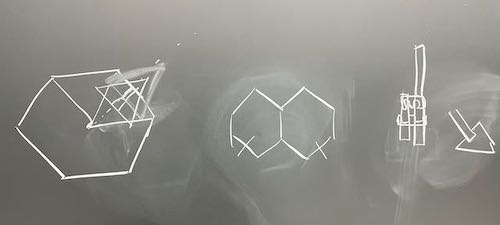
</div>
<p class="caption">Some early sketches I did to help conceptualize the phone stand idea.</p>
One trip to the laser cutter later, I realized this first attempt was not a
success, and that indeed I was way overthinking the prompt. I decided to change
ideas entirely, althogh I liked the idea of being able to stack parallel tiles.
My next idea was for a more sculptural piece, where a central body of parallel
tiles (now circular) could be held up on feet of some kind. Initially, this idea
also used two tile types, but eventually I decided to opt for the tried-and-true
method of doing a simpler thing better rather than doing a more complex thing
worse, so I cut it down to a single circular tile design.
<p class="margin"> </p>
<div class="flexrow">
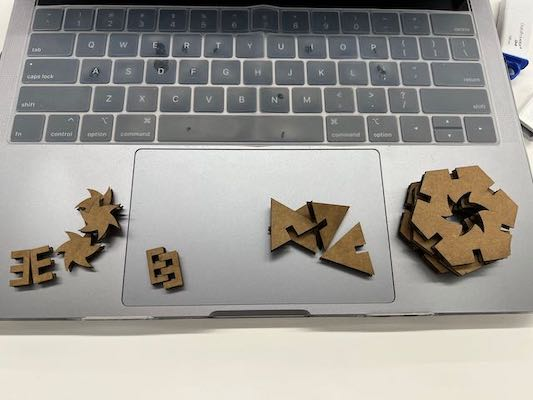
</div>
<p class="caption">A photo of the original tile designs, on my 13" laptop for scale.</p>
For most of the tile connections, a standard reciprocal-notch design would
provid a lot of stability, so I added notches around the circle's edge. I also
thought it would be cool if I could sandwich a tile between two others, so I
added notches entirely internal to the area of the circle. I wasn't sure what
kind of symmetry would work best, so I made two versions: one with 4 edge
notches and two center notches (to allow for center connections of either
orientation), and the other with 3 edge notches and a single center notch offset
from the actual center of the circle.
<p class="margin"> </p>
<div class="flexrow">
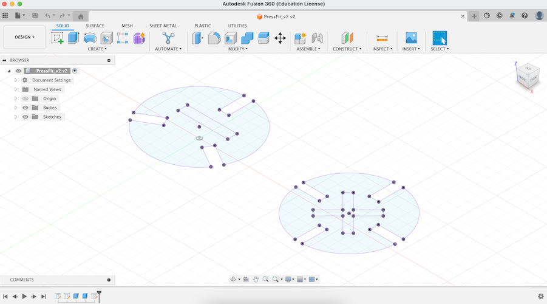
</div>
<p class="caption">The sketch I made in Fusion 360 for version 2 of the tiles.</p>
I printed this first iteration of the circles and made three discoveries. First,
my notches didn't have enough tolerance, so the tiles were too hard to fit
together. Second, the central notches were a little too narrow for a secure
hold. And third, I liked the 3-way tile design better than the 4-way design.
Finally, I was narrowing in on a final iteration. The center notches had
originally been the same size as the connections formed with the edge notches,
but now I made them 5mm longer, and I upped the material thickness from 4mm to
5mm to ease the fit of the connections. A quick laser cut trial showed that the
new center notch size was much better, but that the connections were now too
loose, so I cut the material thickness back down to 4.5mm.
<p class="margin"> </p>
<div class="flexrow">
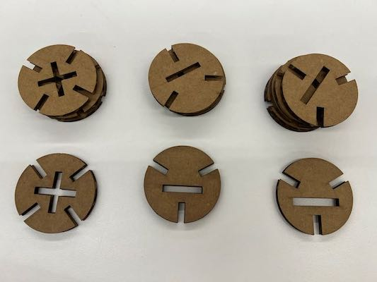
<img src="./tiles_cutting.gif" alt="a laser cutter cutting an array of circular tiles out of cardboard." width="50%">
</div>
<p class="caption">Left: Both designs of version 2, plus the improved version 3 tiles with the larger center notch. Right: a gif of the laser cutter printing the final batch of tiles.</p>
Finally, I printed out a bunch of my circular tokens, and had fun fitting them
together! I was able to create a few interesting-looking sculptures, and I found
that the pliability of the cardboard meant I could fudge the geometry just
enough to make an interesting kind of low stand that could be used as a rest
for a spherical or other oddly-shaped object.
<p class="margin"> </p>
<div class="flexrow">
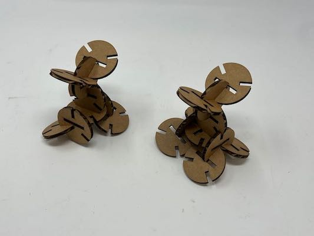
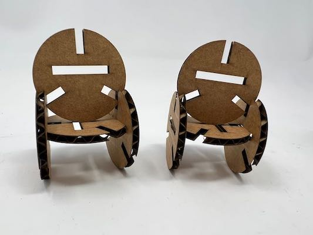
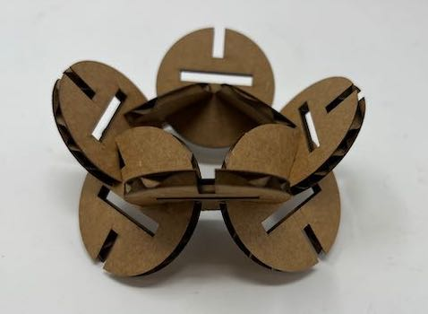
</div>
<div class="flexrow">
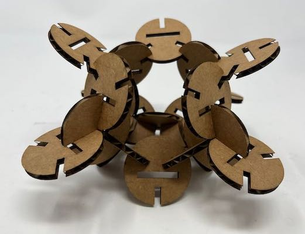
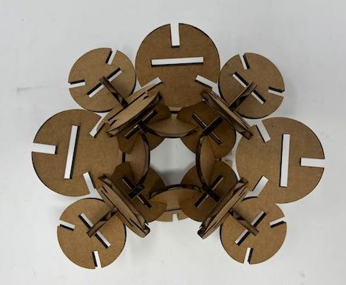
</div>
<p class="caption">Top: some of the smaller sculptures I made out of my tiles, plus the low stand. Bottom: two views of the larger sculpture I made with more of the tiles.</p>
If I were to make another iteration of this, I would do some more testing of
center notch arrangements to see if I could get a design with more options for
center connections, and I would experiment with printing these tiles in various
sizes for increased design flexibility.
<p class="margin"> </p>
<p class="margin"> </p>
<h4>Assignment 2: Fusion 360 Tutorial</h4>
<p class="margin"> </p>
I found a tutorial on YouTube for modeling a Lego brick, so I decided to follow
that. Most of the steps I found fairly easy, just through the skills I had
learned in class and figured out through trial-and-error by that point. (For
instance, I put all the dimensions given in the tutorial into parameters like
we learned in class, in case I ever want to change the shape of my lego block.)
I did learn some new tricks, though, including the fillet tool and the shell
tool. The tutorial also advised viewers to organize models within a file into
components, which seemed like a good idea to me.
<p class="margin"> </p>
<a href="https://youtu.be/6yPKMSb6ja8" target="_blank">Watch the tutorial yourself here!</a>
<p class="margin"> </p>
One fun thing I didn't learn from the tutorial (but afterwards looked up
separately online, because I was curious) was how to change the appearance of
solid bodies by applying a material to them and then editing the color of that
material. This was a familiar concept to me because of my experience with
Blender, but I hadn't known it was a thing you could do in Fusion 360. I used
that skill to make my Lego block a nice red color :)
<p class="margin"> </p>
<div class="flexrow">
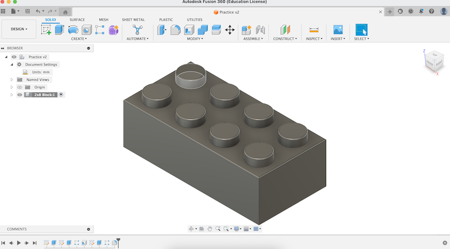
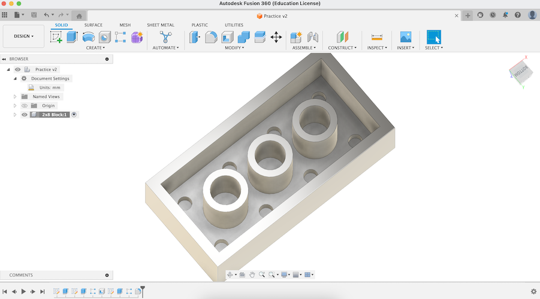
</div>
<div class="flexrow">
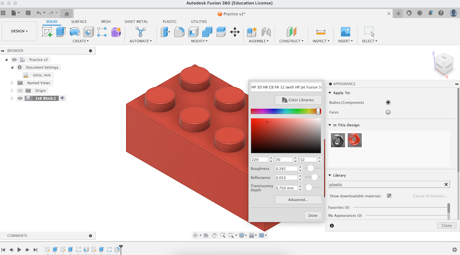
</div>
<p class="caption">Top: the Lego block before its makeover. Bottom: a screenshot of me changing the block to be red.</p>
<p class="margin"> </p>
<p class="margin"> </p>
<h4>Assignment 3: Fusion Modeling</h4>
<p class="margin"> </p>
<div class="flexrow">
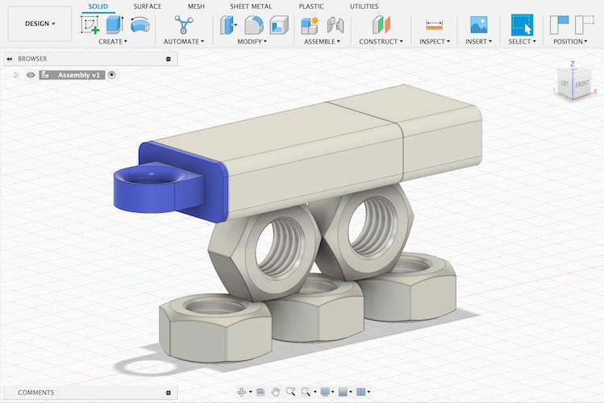
</div>
<p class="caption">My final assembly: a tableau of my flash drive and several copies of the metal nut I modeled.</p>
The first item I chose to model was my trusty flashdrive. I figured this would
be a good choice, because it was a combination of things I was pretty sure I
knew how to do (the rectangular body of the drive) plus some stuff I knew I'd
have to figure out (the circular hook on the end of the drive).
<p class="margin"> </p>
<div class="flexrow">
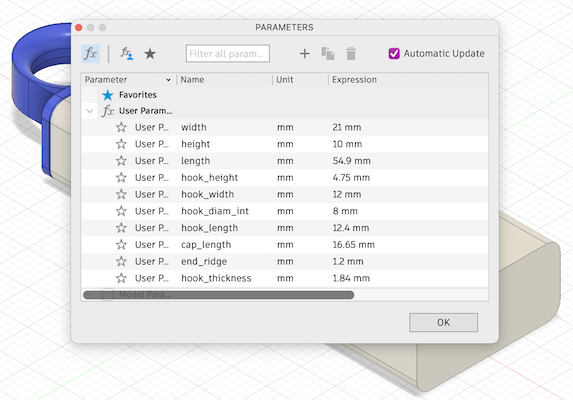
</div>
<p class="caption">The parameters for my flash drive. I knew the round hook was going to be tricky.</p>
I started with a basic rectangular prism, then used the fillet tool on the
edges to round them off. I thought up a few possible strategies for the hook on
the end, but I ended up extruding out a rectangular prism, cutting a hole in it
by extruding a circle, and then using fillet on the edges of the circle to make
the interior rounded edge.
<p class="margin"> </p>
Finally, for the seams in the body, I figured out how to use the split body tool
to create an edge at the correct distances, then used fillet just the tiniest
bit to create the small divot where the plastic parts fit together. For the
finishing touches, I added materials and color matched the model to my real
flash drive. It ended up looking pretty similar!
<p class="margin"> </p>
<div class="flexrow">
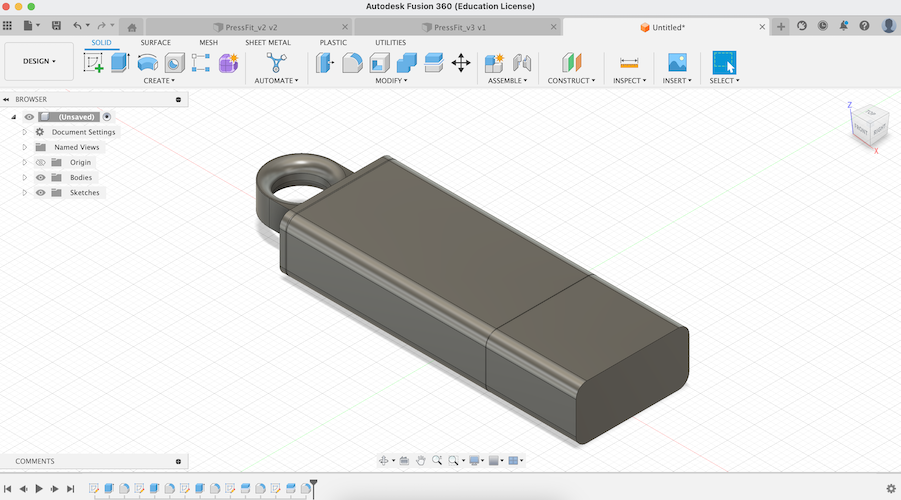
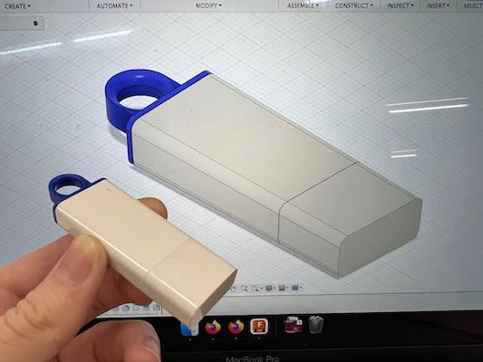
</div>
<p class="caption">The completed model pre-coloring, plus a photo of it the original flash drive in front of the colored model.</p>
<p class="margin"> </p>
For my second model subject, I picked a large metal nut I found in the lab
hardware supply. At first, I thought this would be easy: all I had to do was
make a hexagon, extrude it, cut a hole in the middle with a cylinder, and add
threads with the built-in thread tool.
<p class="margin"> </p>
<div class="flexrow">
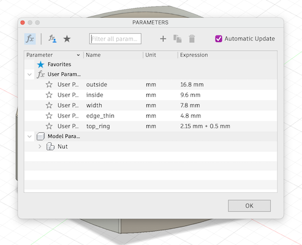
</div>
<p class="caption">The parameters I measured for my nut. How hard can it be, right?</p>
<p class="margin"> </p>
However, I soon realized the bevel on edges of the nut was going to cause
problems. After much trial and error (and looking up some
<a href="https://youtu.be/c5UR_zdANJ4?t=110" target="_blank">tutorials</a> on
the Internet), I learned how to use the extrude tool with a taper angle to get
the result I wanted. The threads also caused me some problems, because Fusion
automatically corrects the hole size to a standard measurement but I couldn't
find one that matched the size I had measured on my nut. Eventually, I just went
with the standard option that was closest in size to what I was looking for.
<p class="margin"> </p>
<div class="flexrow">
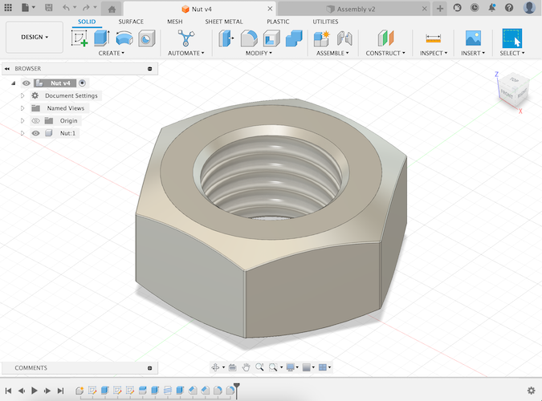
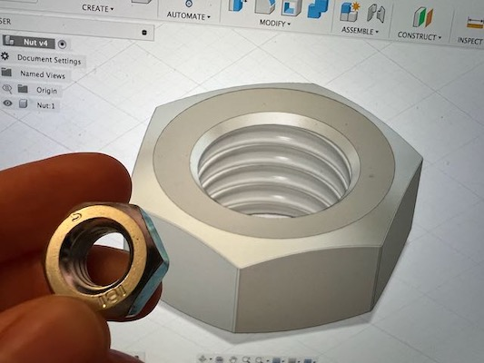
</div>
<p class="caption">The completed nut model, plus a photo of it with the original nut held up in front for comparison.</p>
</div>